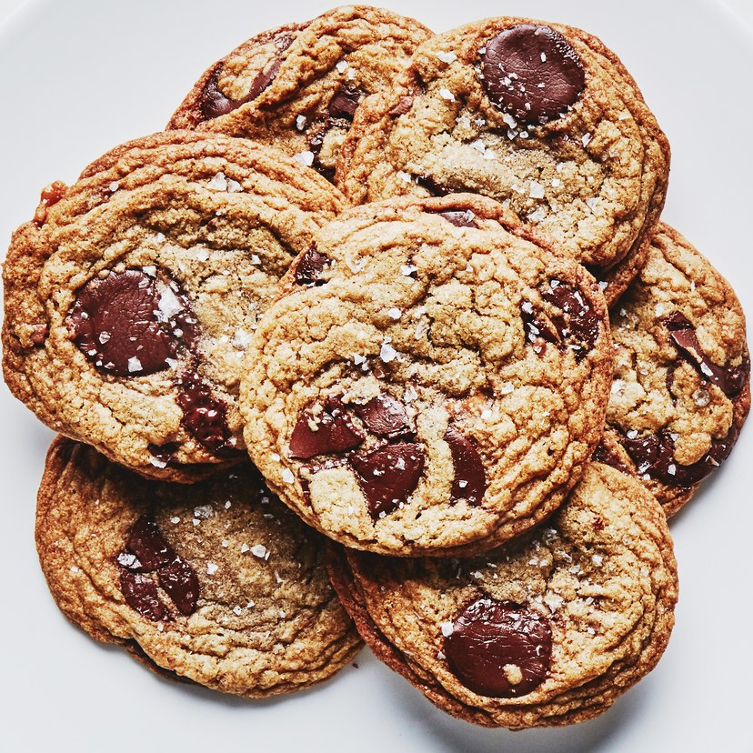

Adult Chocolate Chip Cookies

Chocolate chip cookies with milk and dark chocolate, brown butter, toffee, and flaky finishing salt.
Description
Chocolate chip cookies, but all grown up.
Ingredients
- 1½ cups chocolate wafers (disks, pistoles, fèves; preferably 72% cacao)
- I like to mix some darker baking chocolate with some sweeter disks for a more dimensional chocolate flavor (optional)
- Flaky sea salt
- 2 1.4-oz. chocolate toffee bars (preferably Skor), chopped into ¼-inch pieces
- 2 cups all-purpose flour
- 1 teaspoon baking soda
- ¾ teaspoon kosher salt
- 2 teaspoons vanilla extract or bourbon
- 2 large eggs, room temperature
- 1 cup (2 sticks) unsalted butter
- 1 cup (packed) dark brown sugar
- ⅓ cup granulated sugar
Preparation
- Set eggs out to come up to room temp at least 30 min before any mixing.
- Cookie dough can be made 3 days ahead; cover and chill. Let dough come to room temperature before baking.
Instructions
- Brown butter in a medium saucepan over medium heat, stirring often, until it foams, then browns, 5–8 minutes. Scrape into a large bowl and let cool slightly. (do not use non-stick)
- Meanwhile, whisk flour, baking soda, and kosher salt in a medium bowl.
- Add brown sugar and granulated sugar to browned butter. Using an electric mixer on medium speed, beat until incorporated, about 1 minute.
- Add eggs and vanilla, increase mixer speed to medium-high, and beat until mixture lightens and begins to thicken, about 1 minute.
- Reduce mixer speed to low; add dry ingredients and beat just to combine. Mix in toffee pieces and chocolate wafers with a wooden spoon or a rubber spatula. Let dough sit at room temperature at least 30 minutes to allow the flour to hydrate. Dough will look very loose at first, but will thicken as it sits.
- Place a rack in middle of oven; preheat to 375°. Using a 1½-oz. ice cream scoop, portion out 10 balls of dough and place on a parchment-lined baking sheet, spacing about 3" apart (you can also form dough into ping pong–sized balls with your hands). Do not flatten; cookies will spread as they bake. Sprinkle with sea salt.
- Bake cookies until edges are golden brown and firm but centers are still soft, 9–11 minutes. Let cool on baking sheets 10 minutes, then transfer to a wire rack and let cool completely. Repeat with remaining dough and a fresh parchment-lined baking sheet to make 10 more cookies.